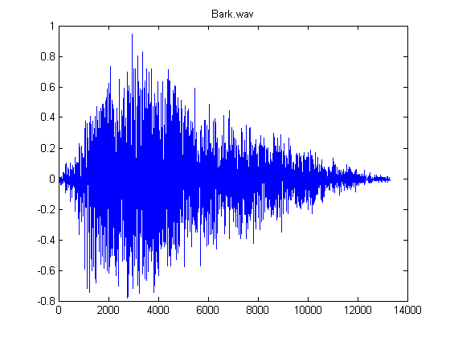
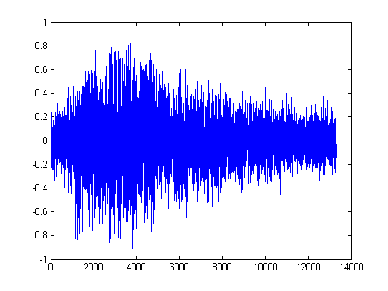
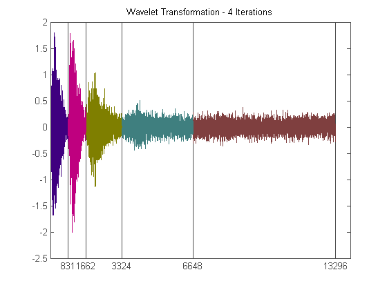
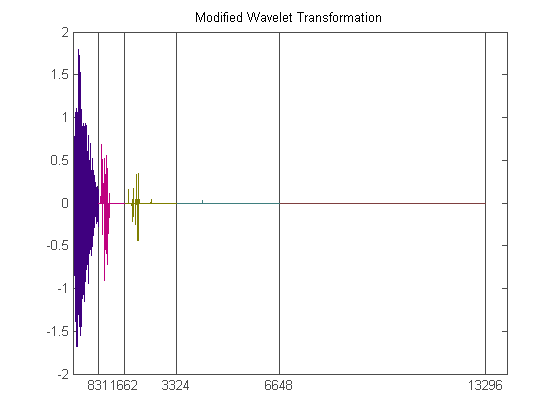
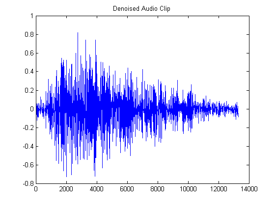

<!DOCTYPE html
  PUBLIC "-//W3C//DTD XHTML 1.0 Strict//EN">
<html xmlns:mwsh="http://www.mathworks.com/namespace/mcode/v1/syntaxhighlight.dtd">
   <head>
      <meta http-equiv="Content-Type" content="text/html; charset=utf-8">
   
      <!--
This HTML is auto-generated from an M-file.
To make changes, update the M-file and republish this document.
      -->
      <title>Audio Denoising</title>
      <meta name="generator" content="MATLAB 7.5">
      <meta name="date" content="2007-12-31">
      <meta name="m-file" content="audiodenoising"><style>
      <link rel="stylesheet" type="text/css" href="style.css">
</head>
   <body>
<div class="header">
	<div class="left"><a href="matlab:edit audiodenoising">Open audiodenoising.m in the Editor</a></div>
      <div class="right"><a href="matlab:echodemo audiodenoising">Run in the Command Window</a></div>
</div>
      <div class="content">
         <h1>Audio Denoising</h1>
         <introduction>
            <p>In this demo, we use the same algorithm that was used in signal denoising to denoise an audio clip.  We introduce some artificial
               noise to illustrate the effectiveness of the algorithm.
            </p>
            <p>It is helpful to review the Signal Denoising demo prior to viewing this demo.</p>
         </introduction>
         <h2>Contents</h2>
         <div>
            <ul>
               <li><a href="#1">Import an Audio File</a></li>
               <li><a href="#3">Play the Audio Clip</a></li>
               <li><a href="#4">Add White Noise to the Clip</a></li>
               <li><a href="#5">Compute the Discrete Wavelet Transformation</a></li>
               <li><a href="#6">Estimate the Noise</a></li>
               <li><a href="#7">Use SureShrink to Denoise</a></li>
               <li><a href="#9">Compute the Inverse Wavelet Transform</a></li>
               <li><a href="#12">Things to Try</a></li>
            </ul>
         </div>
         <h2>Import an Audio File<a name="1"></a></h2>
         <p>Our first step is to load one of the audio clips included with the DiscreteWavelets Toolbox.  To do this, we use the AudioList
            function to list all the files and the AudioNames function to create absolute paths to each audio file.
         </p><pre class="codeinput">AudioList();
d=AudioNames();

<span class="comment">% Let's choose the second clip (bark.wav).</span>
</pre><pre class="codeoutput">

The base directory for the images is 

 C:\Documents and Settings\Patrick Van Fleet\My Documents\DiscreteWaveletsMatlab\Sounds\ 


AUDIO FILES

Name: apollo11.wav
		Type: WAVE,	Duration: 12.4076s,	Channels: 1
		Sample Rate: 11025,	Samples: 136794

Name: bark.wav
		Type: WAVE,	Duration: 0.60322s,	Channels: 1
		Sample Rate: 22050,	Samples: 13301

Name: doppler.wav
		Type: WAVE,	Duration: 2.25578s,	Channels: 1
		Sample Rate: 11025,	Samples: 24870

Name: holycow.wav
		Type: WAVE,	Duration: 1.57671s,	Channels: 1
		Sample Rate: 7418,	Samples: 11696

Name: klaxon.wav
		Type: WAVE,	Duration: 5.23011s,	Channels: 1
		Sample Rate: 11025,	Samples: 57662

Name: laurelhardy.wav
		Type: WAVE,	Duration: 29.1156s,	Channels: 1
		Sample Rate: 11025,	Samples: 321000

Name: rooster.wav
		Type: WAVE,	Duration: 2.20054s,	Channels: 1
		Sample Rate: 11025,	Samples: 24261

Name: sonar.wav
		Type: WAVE,	Duration: 6.43846s,	Channels: 1
		Sample Rate: 11025,	Samples: 70984

</pre><p>Since the second clip is an audio file in wav format, we use wavread to import it as a vector.  We also trim some elements
            off the end of the vector to ensure that the length of the resulting vector is divisible by 2^4.
         </p><pre class="codeinput">[data,srate]=wavread(d{2});
data=ChopVector(data,4);
N=length(data);

disp(sprintf(<span class="string">'The length of the audio clip is %i.'</span>,N));
disp(sprintf(<span class="string">'The sampling rate for the clip is %i.'</span>,srate));
</pre><pre class="codeoutput">The length of the audio clip is 13296.
The sampling rate for the clip is 22050.
</pre><h2>Play the Audio Clip<a name="3"></a></h2>
         <p>In this cell, we play the audio clip and plot it.</p><pre class="codeinput">plot(data);
title(<span class="string">'Bark.wav'</span>);

wavplay(data,srate);
</pre> 
<embed src="audiodenoising1.wav" loop="false" autoplay="false" width=145 height=60></embed>
<h2>Add White Noise to the Clip<a name="4"></a></h2>
         <p>We next add some white noise to the clip.  We can use the Matlab function randn to assist in this task.</p><pre class="codeinput">noise=randn(N,1);

<span class="comment">% Pick a noise level.</span>
sigma = .1;

<span class="comment">% Create the noisy audio clip.</span>
v=data+sigma*noise;

<span class="comment">% Plot the noisy vector.</span>
clf;
plot(v);

wavplay(v,srate);
</pre> 
<embed src="audiodenoising2.wav" loop="false" autoplay="false" width=145 height=60></embed>
<h2>Compute the Discrete Wavelet Transformation<a name="5"></a></h2>
         <p>We now compute four iterations of the discrete wavelet transformation of v.  We will use the Coif(1) filter for this task.</p><pre class="codeinput">its=4;
h=Coif(1);
wt=WT1D(v,h,its);

<span class="comment">% Plot the transformation.</span>
clf;
WaveletVectorPlot(wt,its);
title(sprintf(<span class="string">'Wavelet Transformation - %i Iterations'</span>,its));
</pre> <h2>Estimate the Noise<a name="6"></a></h2>
         <p>The next step in the denoising process is to estimate the noise.  Of course, we know the noise level, but it is good to see
            how well our estimator works.  We use the formula sigma ~ MAD(hp(1))/.6745 (see
         </p><pre class="codeinput"><span class="comment">%Section 9.1 of the text).</span>

<span class="comment">% First we split the wavelet transform into various parts.</span>
wtlist=WaveletVectorToList(wt,its);

<span class="comment">% We compute the MAD of the first highpass portion and divide by .6745.</span>
sigmahat=MAD(wtlist(1).hp)/.6745;

disp(sprintf(<span class="string">'The noise is estimated to be %f.'</span>,sigmahat));
</pre><pre class="codeoutput">The noise is estimated to be 0.098260.
</pre><h2>Use SureShrink to Denoise<a name="7"></a></h2>
         <p>We will use SureShrink to denoise the audio clip.  We first test the sparseness of each highpass portion of the transformation.
             If found to be sparse, we use the universal threshold, otherwise we use the sure shrink threshold.
         </p><pre class="codeinput"><span class="comment">% Create vectors to hold the tolerances and sparseness flags, respectively.</span>
lambda=zeros(1,its);
flag=zeros(1,its);
<span class="keyword">for</span> j=1:its
    [lambda,flag]=TestSparseness(wtlist(j).hp,<span class="string">'PrintResult'</span>,<span class="string">'True'</span>);
    <span class="keyword">if</span> flag==1 <span class="comment">%The input is not sparse so scale by sigmahat.</span>
        wtlist(j).hp=wtlist(j).hp/sigmahat;
    <span class="keyword">end</span>
    wtlist(j).hp=ShrinkageFunction(wtlist(j).hp,lambda);
    <span class="keyword">if</span> flag==1 <span class="comment">%Multiply back by the noise level.</span>
        wtlist(j).hp=wtlist(j).hp*sigmahat;
    <span class="keyword">end</span>
<span class="keyword">end</span>
</pre><pre class="codeoutput">The input is sparse - returning the universal threshold value.
The input is sparse - returning the universal threshold value.
The input is sparse - returning the universal threshold value.
The input is sparse - returning the universal threshold value.
</pre><p>Plot the modified wavelet transformation</p><pre class="codeinput"><span class="comment">% First reconstruct the modified wavelet transform vector.</span>
newwt=WaveletListToVector(wtlist,its);

<span class="comment">% Plot the modified wavelet transformation.</span>
clf;
WaveletVectorPlot(newwt,its);
title(<span class="string">'Modified Wavelet Transformation'</span>);
</pre> <h2>Compute the Inverse Wavelet Transform<a name="9"></a></h2>
         <p>To obtain the denoised audio clip, we perform four iterations of the inverse wavelet transformation.</p><pre class="codeinput">denoised=IWT1D(newwt,Coif(1),its);

<span class="comment">% Plot the denoised audio clip.</span>
plot(denoised);
title(<span class="string">'Denoised Audio Clip'</span>);

<span class="comment">% Play the denoised audio clip.</span>
wavplay(denoised,srate);
</pre> 
<embed src="audiodenoising3.wav" loop="false" autoplay="false" width=145 height=60></embed>
<p>Play the noisy clip.</p><pre class="codeinput">wavplay(v,srate);
</pre>
<embed src="audiodenoising2.wav" loop="false" autoplay="false" width=145 height=60></embed>
<p>Play the original clip.</p><pre class="codeinput">wavplay(data,srate);
</pre>
<embed src="audiodenoising1.wav" loop="false" autoplay="false" width=145 height=60></embed>
<h2>Things to Try<a name="12"></a></h2>
         <p>Make a copy of this demo and :</p>
         <div>
            <ul>
               <li>try different wavelet filters</li>
               <li>change the value of iterations to any integer 1, 2,..., 8</li>
               <li>try other values for lambda</li>
            </ul>
         </div><pre class="codeinput">close <span class="string">all</span>;
</pre><p class="footer"><br>
            Published with MATLAB&reg; 7.5<br></p>
      </div>
      <!--
##### SOURCE BEGIN #####
%% Audio Denoising
% In this demo, we use the same algorithm that was used in signal denoising
% to denoise an audio clip.  We introduce some artificial noise to
% illustrate the effectiveness of the algorithm.
%
% It is helpful to review the Signal Denoising demo prior to viewing
% this demo.

%% Import an Audio File
% Our first step is to load one of the audio clips included with the
% DiscreteWavelets Toolbox.  To do this, we use the AudioList function to
% list all the files and the AudioNames function to create absolute paths
% to each audio file.

AudioList();
d=AudioNames();

% Let's choose the second clip (bark.wav).

%%
% Since the second clip is an audio file in wav format, we use wavread to
% import it as a vector.  We also trim some elements off the end of the
% vector to ensure that the length of the resulting vector is divisible by
% 2^4.

[data,srate]=wavread(d{2});
data=ChopVector(data,4);
N=length(data);

disp(sprintf('The length of the audio clip is %i.',N));
disp(sprintf('The sampling rate for the clip is %i.',srate));

%% Play the Audio Clip
% In this cell, we play the audio clip and plot it.

plot(data);
title('Bark.wav');

wavplay(data,srate);

%% Add White Noise to the Clip
% We next add some white noise to the clip.  We can use the Matlab function
% randn to assist in this task.

noise=randn(N,1);

% Pick a noise level.
sigma = .1;

% Create the noisy audio clip.
v=data+sigma*noise;

% Plot the noisy vector.
clf;
plot(v);

wavplay(v,srate);

%% Compute the Discrete Wavelet Transformation
% We now compute four iterations of the discrete wavelet transformation of
% v.  We will use the Coif(1) filter for this task.

its=4;
h=Coif(1);
wt=WT1D(v,h,its);

% Plot the transformation.
clf;
WaveletVectorPlot(wt,its);
title(sprintf('Wavelet Transformation - %i Iterations',its));

%% Estimate the Noise
% The next step in the denoising process is to estimate the noise.  Of
% course, we know the noise level, but it is good to see how well our
% estimator works.  We use the formula sigma ~ MAD(hp(1))/.6745 (see 
%Section 9.1 of the text).

% First we split the wavelet transform into various parts.
wtlist=WaveletVectorToList(wt,its);

% We compute the MAD of the first highpass portion and divide by .6745.
sigmahat=MAD(wtlist(1).hp)/.6745;

disp(sprintf('The noise is estimated to be %f.',sigmahat));

%% Use SureShrink to Denoise
% We will use SureShrink to denoise the audio clip.  We first test the
% sparseness of each highpass portion of the transformation.  If found to
% be sparse, we use the universal threshold, otherwise we use the sure
% shrink threshold.

% Create vectors to hold the tolerances and sparseness flags, respectively.
lambda=zeros(1,its);
flag=zeros(1,its);
for j=1:its
    [lambda,flag]=TestSparseness(wtlist(j).hp,'PrintResult','True');
    if flag==1 %The input is not sparse so scale by sigmahat.
        wtlist(j).hp=wtlist(j).hp/sigmahat;
    end
    wtlist(j).hp=ShrinkageFunction(wtlist(j).hp,lambda);
    if flag==1 %Multiply back by the noise level.
        wtlist(j).hp=wtlist(j).hp*sigmahat;
    end
end

%%
% Plot the modified wavelet transformation

% First reconstruct the modified wavelet transform vector.
newwt=WaveletListToVector(wtlist,its);

% Plot the modified wavelet transformation.
clf;
WaveletVectorPlot(newwt,its);
title('Modified Wavelet Transformation');

%% Compute the Inverse Wavelet Transform 
% To obtain the denoised audio clip, we perform four iterations of the
% inverse wavelet transformation.

denoised=IWT1D(newwt,Coif(1),its);

% Plot the denoised audio clip.
plot(denoised);
title('Denoised Audio Clip');

% Play the denoised audio clip.
wavplay(denoised,srate);

%%
% Play the noisy clip.

wavplay(v,srate);

%%
% Play the original clip.

wavplay(data,srate);

%% Things to Try
% Make a copy of this demo and :
%
% * try different wavelet filters
% * change the value of iterations to any integer 1, 2,..., 8
% * try other values for lambda
% 

%%
close all;
displayEndOfDemoMessage(mfilename)

##### SOURCE END #####
-->
   </body>
</html>